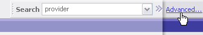
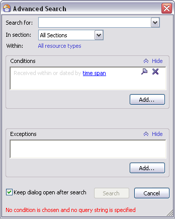

Using Advanced Search
You can use the Advanced Search feature to limit the types of resources you want to search... only e-mails, for example. You can also add other conditions such as limiting search to a particular correspondent, or to resources received within some time frame.
Launching Advanced Search
There are 5 kinds of criteria that you can specify for advanced Search:
- Search keyword(s): The word, words, or phase that found items must contain. You can use Search Query Syntax along with keywords.
- Section: The section(s) of the resource(s) in which the search keyword(s) must occur.
- Resource type(s): The type(s) of resource(s) that the search applies to.
- Conditions: Some criteria that must be met in order for an item to be returned by the Search. For example, a condition might specify that some specific text must appear in the found resource(s).
- Exceptions: Any exception(s) to the Condition(s). For example, a Condition might specify that a resource must be from a particular sender. An Exception might specify some text in the resource which, if present, would prevent the resource from being returned in search results even though the sender condition is matched.
Starting a New Search
There is no single set of steps for specifying an Advanced Search, because each one can contain almost any combination of the many criteria. The basic steps are:
-
Click the Advanced link in the Search box to launch
the Advanced Search dialog.
Advanced Search dialog
- Specify the search keyword(s), including any Search
Query Syntax elements.
Now the “search history” is stored in the drop-down list of the “Search for:” entry field. Click the drop-down arrow and select the word or phrase you have previously searched for.
- Specify what resource type(s) the search applies to. By default, a new search applies to all supported resource types. If you want to limit the search to just one or two types, you must explicitly specify these.
- Define one or more Conditions. (Optional)
- Define one or more Exceptions to the Conditions. (Optional)
One good way to learn how Advanced Search works is to select some resources you already have and practice creating searches that find them.
Saving Searches for Later Reuse
You can convert the results any search, Basic or Advanced, to a View. Clicking on the View gives you access to all the resources turned up by the search. This way, if you create a complex search that you will need again, you don’t have to specify the search criteria every time. For information, see Organizing Using Views: Creating a View from Search Results.
Search in This Folder, Newsgroup, Feed…
You can run a little bit different “type” of advanced search but — its scope will be limited to the currently selected Outlook folder, newsgroup or newsgroups, feed or feeds. This will allow you to perform the advanced search without any need to customize the conditions in the Advanced Search dialog.
Select the Outlook folder, newsgroup (or several newsgroups), feed or feed group (or several feed groups), right click and select Search in This Folder/Newsgroup/Feed… (the end of this command is a resource-specific). The Advanced Search dialog opens. Type the word to search for and press Search. To select more than one item, press and hold down either Ctrl or Shift.